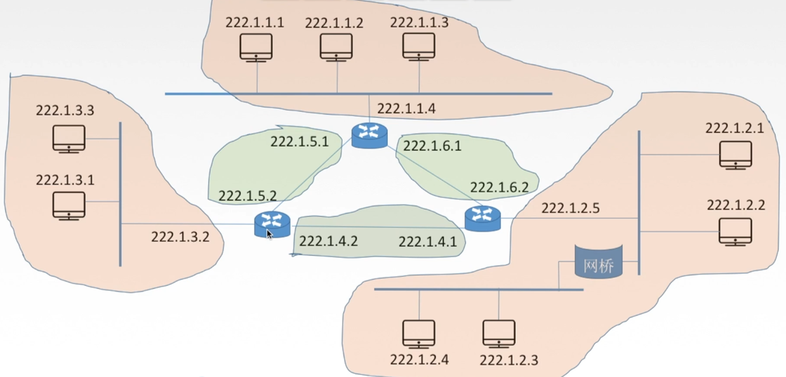
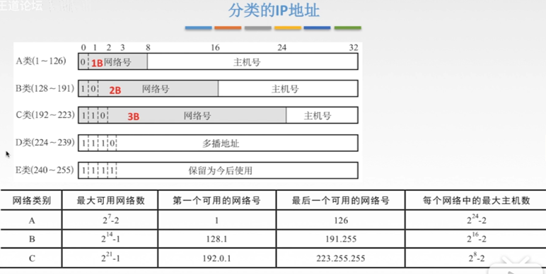
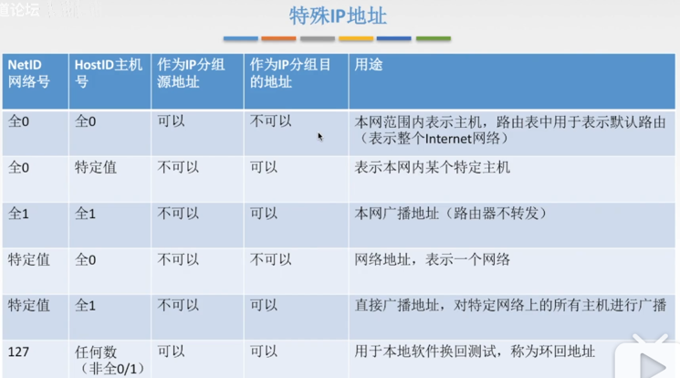
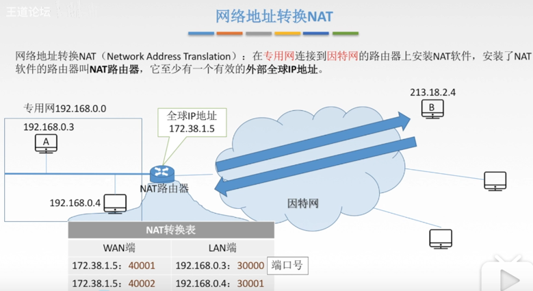

这篇文章谈谈ARP协议，在开始之前，咱们先热热身：
OSI七层模型中，ARP是属于哪一层的协议？ A. 应用层 B. 传输层 C. 网络层 D. 数据链路层
解析：在OSI模型（七层）中，ARP协议属于数据链路层。在TCP/IP模型（五层）中，ARP协议属于网络层。选D。
在讲ARP协议之前先来复习两个概念：IP地址和MAC地址。
一、IP地址
IP地址就是要在茫茫网络中找到特定电脑。既然网络由路由器和主机连接起来，那么这个IP地址就要能明确，哪个网络？哪台主机？
它有两个版本，大家都不陌生，分别为IPv4和IPv6。
1.IPv4地址
IP编址的历史阶段有三个，分别代表三种编址方式：
(1) 分类的IP地址
(2) 子网的划分
(3) 构成超网（无分类编址方法）
详细解释一下：
(1) 分类的IP地址
IP地址：计算机的身份证号，全世界唯一的32位/4字节的标识符，用于标识路由器主机的接口。
IP地址:={<网络号>,<主机号>}。
注意：并不是一个IP地址标识一个主机，一个主机可以有很多接口。有线上网，就是有线接口。无线上网，就是无线接口。而路由器
也不单只有一个接口，一个路由器可以连很多个主机，也可以连很多的路由器。即，一个路由器有很多个接口，每个接口都会分配
一个唯一的IP地址。
例如：某电脑的IP地址为11011111 00000001 00000001 00000001 = 223.1.1.1 (点分十进制表示) 这前面的 11011111 = 223 为网络号，后面的 00000001 00000001 00000001 = 1.1.1 为主机号。
看下面这张图片：
图中有六个网络，橘色的部分分别为同一路由器接口所连接。
左边的局域网为LAN1用222.1.3.0表示（同一网络的网络号相同，主机号各不相同）。
上方的局域网为LAN2用222.1.1.0表示。
右下角的局域网为LAN3用222.1.2.0表示，该网络中有一个网桥，已知网桥无法分割网段，即该网络只是一个局域网。
且从图中可看出，一个路由器就有三个IP地址，每个接口一个地址。
三个绿色区域为无编号网络（无名网络）

下面是分类的IP地址：
IP地址被分为了五类：ABCDE。它们的不同就在于，网络号分配的字节数不同。

注意：并不是所有的IP地址都可以使用，会有一些特殊的IP地址，不能随便使用。

除了特殊IP地址，还有私有IP地址，用于本网，专用网。路由器对目的地址是私有IP地址的数据报一律不进行转发。
（放在外网或因特网中无效）私有IP地址如下：
| 地址类别 | 地址范围 | 网段个数 |
|---|---|---|
| A类 | 10.0.0.0 - 10.255.255.255 | 1 |
| B类 | 172.16.0.0 - 172.31.255.255 | 16 |
| C类 | 192.168.0.0 - 192.168.255.255 | 256 |
私有IP地址如何能被因特网识别？
需要网络地址转换NAT(Network Address Translation)技术：在专用网连接到因特网的路由器上安装NAT软件，安装了
软件的路由器叫NAT路由器，他至少有一个有效地外部全球IP地址。
可以将NAT技术理解为翻译官，将内网IP地址翻译为外网IP地址。或者可以理解为，全村只有一台电话在村长的家里，
村民要打电话都要去村长家。有电话打进村，也都需要村长喊人来接。

本博客所有文章除特别声明外，均采用 CC BY-SA 4.0 协议 ，转载请注明出处！